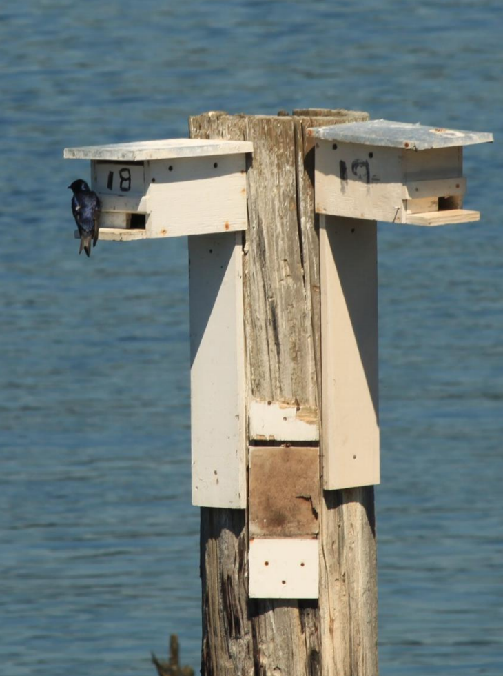

The Purple Martin is the largest species of swallow in North America. Their classification name of PUMA comes from the first two letters of “Purple” and “Martin”. PUMA’s are migratory birds that make their trip every summer. They typically have one brood per season, and the females will lay anywhere from two to seven eggs during this brood. PUMA's are aerial insectivores, and will forage up to six miles away from the colony for food. They are also the highest flying songbird in the nesting area. One unique thing about themis the male and female take equal roles in nest building and caring for hatchlings.
 PUMA’s fly from South America to different parts of the US, chasing the warmer climate provided by the Northern Hemisphere Summer months to breed. They like to nest in locations that have wet/moist areas nearby. This makes the PNW a prime place for them to migrate to. In Washington state, PUMA’s typically nest near the waters of Puget Sound. The first to arrive in a season are usually the Scouts. Scouts are males & females that are older than two years that had breeding success during last season (Mid-April). The next to arrive after the Scouts are Males & females that are older than two years with failed breeding attempts the previous season. The last to arrive are typically Male & female subadults (4-6 weeks after the Scouts).
PUMA’s fly from South America to different parts of the US, chasing the warmer climate provided by the Northern Hemisphere Summer months to breed. They like to nest in locations that have wet/moist areas nearby. This makes the PNW a prime place for them to migrate to. In Washington state, PUMA’s typically nest near the waters of Puget Sound. The first to arrive in a season are usually the Scouts. Scouts are males & females that are older than two years that had breeding success during last season (Mid-April). The next to arrive after the Scouts are Males & females that are older than two years with failed breeding attempts the previous season. The last to arrive are typically Male & female subadults (4-6 weeks after the Scouts).
The PUMA population has declined in last 50 –100 years, mostly due to loss of suitable natural nesting cavities. Competition with invasive species (European Starling & House Sparrow) for suitable nesting locations have also played a major role in this decline. In addition to the competition for suitable nest sites, food availability has been heavily influenced by extreme periods of cool/rainy weather, greatly impacting the number of PUMA’s returning to the region. These factors necessitate monitoring the population so suitable conservation efforts can take place. These efforts work to ensure the success of future populations. By joining our cause as a citizen scientist, you will help to verify the PUMA population numbers of the PNW nesting locations (North, Central, and South Sound, WA Coast, Eastern WA). The data you collect will help ensure that proper conservation efforts are undertaken. Among those efforts are protecting colony sites from development, assisting the WPMWG with designing better artificial housing, and further our understanding of the biology of Purple Martins to better manage them going forward.
 Your first steps to assist with PUMA conservation will be to pre-register for, and attend one of the required workshops. The workshops will help you learn what is required to be a citizen scientist. You will also need to make a commitment to attend future training workshops and complete one survey a month from April to August. WDFW does not have the funding or resources to support the staff to monitor all sites in Washington, so the more volunteers equals more data collected. Your time as a citizen scientist helps us work towards getting Western PUMAs listed as a threatened species, which will help in conservation efforts, something we cannot do without you!
Your first steps to assist with PUMA conservation will be to pre-register for, and attend one of the required workshops. The workshops will help you learn what is required to be a citizen scientist. You will also need to make a commitment to attend future training workshops and complete one survey a month from April to August. WDFW does not have the funding or resources to support the staff to monitor all sites in Washington, so the more volunteers equals more data collected. Your time as a citizen scientist helps us work towards getting Western PUMAs listed as a threatened species, which will help in conservation efforts, something we cannot do without you!
Thank you!